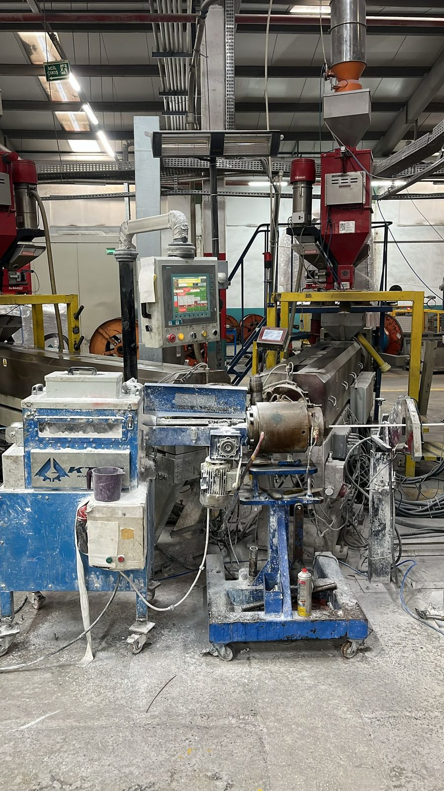
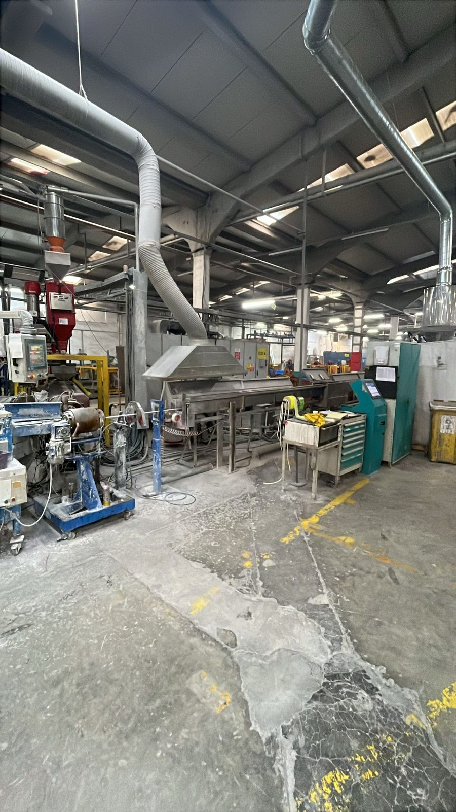
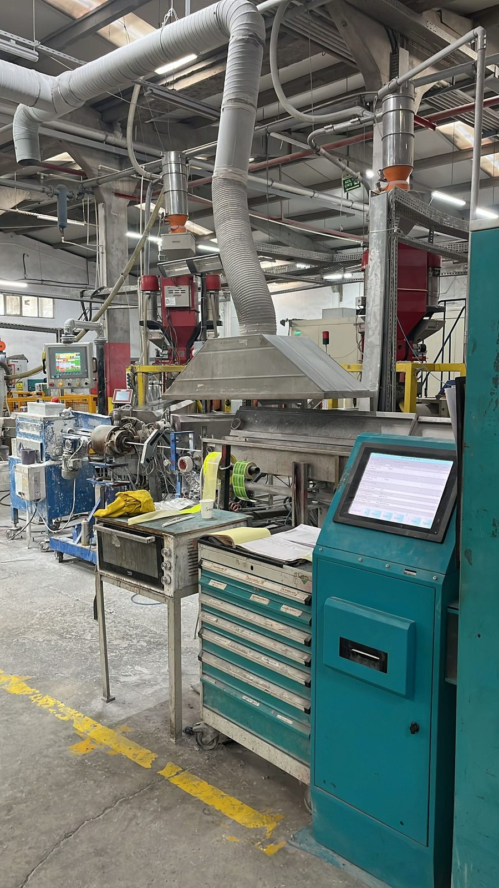

🔐
Veri gizliliği
Ham üretim verisi merkezi sunucuya aktarılmaz. Model güncellemeleri paylaşılır; diferansiyel gizlilik ve güvenli toplama yaklaşımlarıyla risk azaltılır.
Bu proje, kablo üretim hattından gelen IoT/OPC sensör verilerini tek bir merkeze taşımadan yapay zekâ modeli eğitmeyi hedefler. Sıcaklık, basınç, çekme kuvveti, hat hızı ve üretim zamanı gibi verilerden hattın normal çalışma düzeni öğrenilir; arıza ve kalite sapmaları daha erken fark edilmeye çalışılır. Ham üretim verisi ise fabrikanın içinde kalır.
Fabrikalardaki sensör verisi büyüyor; fakat bu veriyi merkeze taşımak hem maliyetli hem de riskli. Proje, veriyi yerinde tutarak ortak model eğitme fikrini endüstriyel üretim verisine uygular.
Ham üretim verisi merkezi sunucuya aktarılmaz. Model güncellemeleri paylaşılır; diferansiyel gizlilik ve güvenli toplama yaklaşımlarıyla risk azaltılır.
Kablo hattından gelen sıcaklık, basınç, çekme kuvveti, hat hızı ve sıcak çap/reel gibi OPC verileriyle kalite sapması ve bakım ihtiyacı daha erken tespit edilebilir.
Ham veri akışı yerine sıkıştırılmış model güncellemeleri kullanılarak ağ trafiği ve merkezi depolama ihtiyacı azaltılabilir.
Bu çalışma masa başında kurulmuş soyut bir yapay zekâ denemesi değildi. Fotoğraflarda görülen kablo üretim hattı gibi gerçek bir endüstriyel ortamdan gelen üretim verisini ele aldım: makinenin çalışma anını, sensör sinyallerini, ürün/iş emri bağlamını ve ölçüm zamanını birlikte okuyarak hattın normal davranışını yapay zekâya öğretmeye çalıştım.



Basit anlatımla: kablo hattı çalışırken makine sürekli iz bırakır. Hat ne hızda ilerliyor, sıcak çap/reel değeri nasıl değişiyor, basınç ve çekme kuvveti normal aralıkta mı, hangi ürün veya iş emri için hangi vardiyada ölçüm alınmış? Bu izleri bir doktorun nabız, tansiyon ve ateşi birlikte okuması gibi birlikte değerlendirdim.
Veri tabanındaki her satırı, üretim hattının o saniyedeki “fotoğrafı” gibi düşündüm. Bu fotoğrafta ürün veya iş emri kodu, üretimin hangi vardiya/operasyon bağlamında gerçekleştiğini gösteren referans bilgi, ölçüm zamanı ve hattın farklı noktalarından gelen sensör değerleri birlikte yer aldı. Böylece model, yalnızca tek bir sıcaklık değerine değil; ürün, zaman, vardiya ve makine davranışını aynı anda anlatan daha geniş bir üretim bağlamına bakabildi.
Modelin görevi, bu sinyallerden hattın normal çalışma ritmini öğrenmekti. Her sensörün ortalama değeri etrafında ±%5 tolerans aralığı kullanılarak kayıtlar “iyi” veya “kötü” şeklinde etiketlendi. Böylece sistem, kalite sapması veya bakım ihtimali doğurabilecek durumları erken işaretleyebilecek bir sınıflandırma problemine dönüştürüldü.
Her ölçümün hangi ürün/iş emriyle ve hangi üretim koşuluyla ilişkili olduğu izlendi. Bu bilgi, modelin farklı ürünlerde oluşan davranış farklarını ayırmasına yardım etti.
Her kayıt zaman damgasıyla tutulduğu için veriler dakika/saniye düzeyinde sıralandı; gün içi değişim, vardiya etkisi ve gece üretimindeki sapmalar incelendi.
Hattın farklı noktalarından gelen 37 sensör sinyali; sıcaklık, basınç, çekme kuvveti, hat hızı ve sıcak çap/reel gibi üretim davranışlarını okumak için işlendi.
±%5 tolerans yaklaşımıyla hattın normal veya sapmalı çalıştığı anlar sınıflandırılabilir hale getirildi.
Kablo üretiminde küçük bir sıcaklık, hız veya çekme kuvveti sapması ürün kalitesini etkileyebilir. Çalışmada sensör değerleri ±%5 tolerans mantığıyla izlenerek hattın kararlı mı sapmalı mı çalıştığı sınıflandırılabilir hale getirildi.
Makine davranışındaki anormallikler erken okunmadığında arıza büyüyebilir ve hat durabilir. Model, bakım ihtimali doğurabilecek olağan dışı üretim davranışlarını daha erken işaretlemeye yönelik bir karar destek altyapısı olarak kurgulandı.
Üretim reçetesi, hat hızı, sıcaklık ve kalite davranışı firma için stratejik bilgidir. Federe öğrenme yaklaşımıyla ham veri üretim hattında bırakıldı; merkeze yalnızca model güncellemelerinin gitmesi hedeflendi.
Her ekstrüder makinesi aynı sayıda ölçüm alanı üretmeyebilir. Bu nedenle veriler temizlendi, ölçeklendi, eksikler tamamlandı ve makineler arası öğrenmeyi mümkün kılmak için ortak yapıya dönüştürüldü.
Bu sayfada teknik kolon adlarını özellikle geri planda bıraktım. Çünkü ödül jürisinin görmesi gereken şey veritabanı şeması değil; üretim hattından alınan ham sinyallerin kalite, bakım, veri gizliliği ve operasyonel verimlilik için anlaşılır bir karar destek problemine dönüştürülmesidir.
Fabrikalar veriden öğrenmek istiyor; fakat üretim verisini dışarı taşımak istemiyor. Bu çalışmada bu ikileme, “veriyi değil, öğrenilen modeli paylaşalım” fikriyle yaklaştım.
Bir fabrikanın farklı üretim hatları ortak akla katkı verir; ama kendi ham verisini dışarı çıkarmaz.
Çünkü üretim tesislerinde yapay zekânın en büyük engellerinden biri olan “veriyi paylaşma korkusunu” teknik mimariyle azaltmayı hedefler.
Bu çalışma, kablo üretim hattından alınan OPC/MSSQL sensör verilerini kullanarak veriyi merkezi sunucuya taşımadan yapay zekâ modeli eğitmeyi amaçlayan, gizlilik korumalı ve ölçeklenebilir bir endüstriyel IoT analiz yaklaşımıdır.
Federe öğrenme sayesinde her üretim hattı kendi verisiyle yerel model eğitir; merkezi sunucu yalnızca model güncellemelerini birleştirerek ortak modeli oluşturur. Bu çalışmada sıcaklık, basınç, çekme kuvveti, hat hızı ve zaman damgalı üretim verileri temizlenip ±%5 tolerans yaklaşımıyla etiketlenmiş; kalite kontrol, kestirimci bakım ve operasyonel verimlilik için kullanılabilecek bir karar destek altyapısına dönüştürülmüştür.
Sanayi odaklı · Gizlilik korumalı · Ölçeklenebilir · Uygulanabilir araştırma prototipi